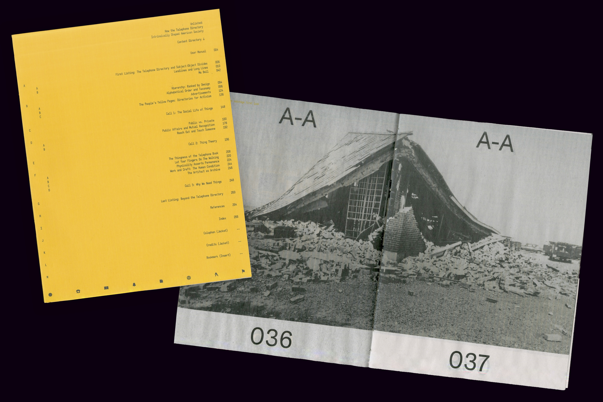
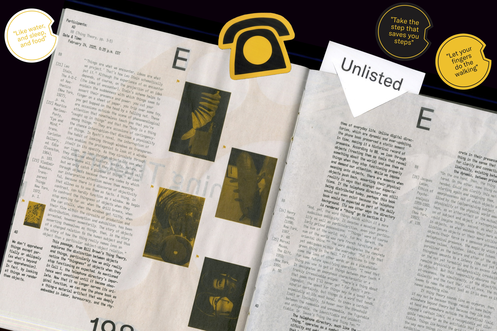
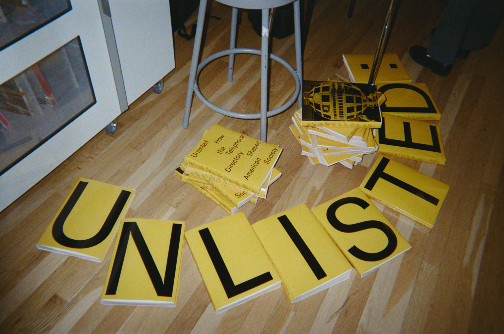
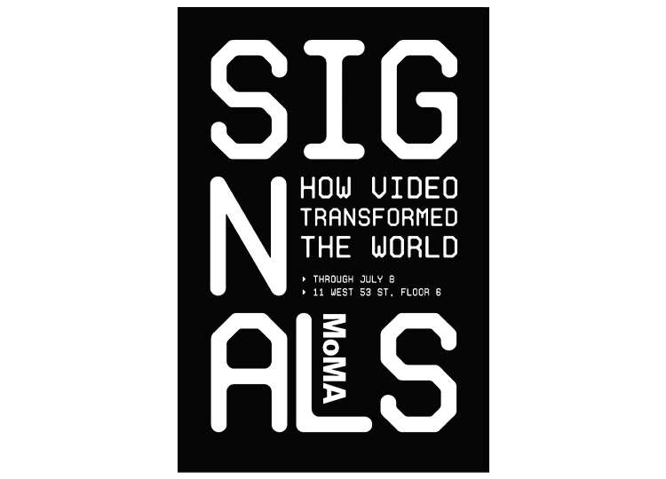
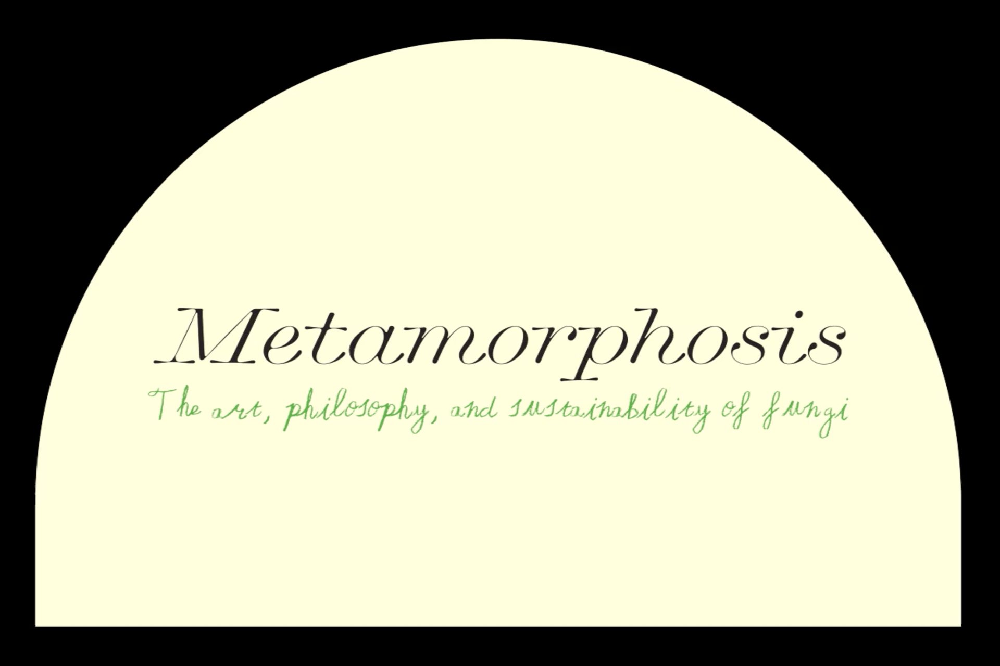
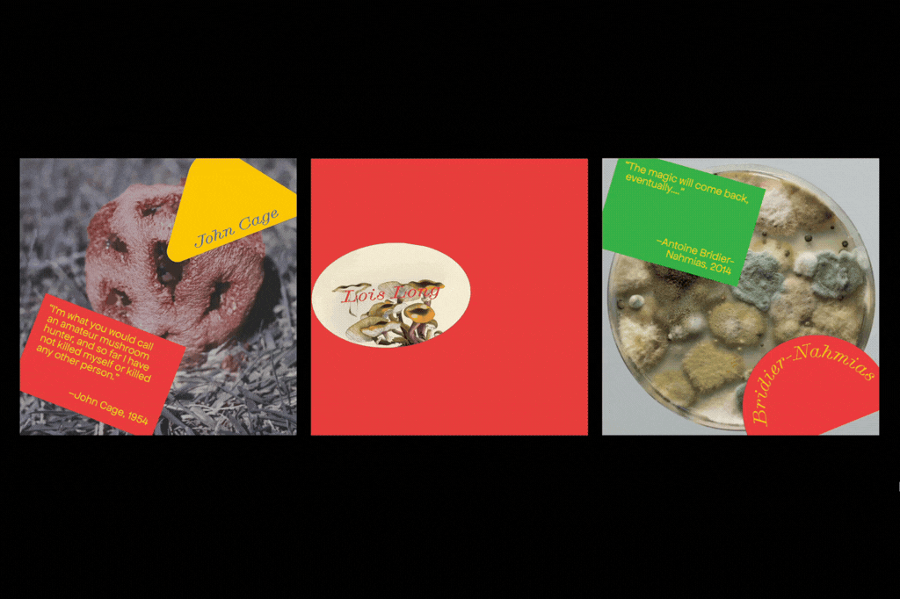

Aleisha Dastas
(b. 2003, Puerto Rico) is a multidisciplinary designer and artist based in New York,
NY interested in treating otherwise mundane or disposable objects as valuable artifacts.
She graduated from Parsons School of Design in 2025 with a BFA in Communication Design.
Currently at OOOOAAAA







Unlisted
A study of the telephone directory as a public artifact, and of what its obsolescence reveals about how we find (and lose) one another. Produced as a newsprint book in an edition of 50, each copy bearing a unique cover.


Los Perritos
Miniature zine featuring nine self-directed photographs of plastic capsule dog toys, exploring storytelling through acts of collection.




Signals
Conceptual physical and digital poster series for MoMA’s 2023 exhibition Signals: How Video Transformed the World, using die-cut vinyl designed to overlay existing ads and reveal hidden content.


Erfenis Plantin
Erfenis Plantin is an Old-Style serif revival of Pierpont’s 1913 Plantin for Monotype. Named after the Dutch word for “heritage,” it retains the original’s sturdy forms and moderate contrast, with refined counters and sharper serifs for improved legibility in print.






Metamorphosis
Visual identity for an exhibition about the art, philosophy, and sustainability of fungi.


Dissolving Histories (Saltwater & Hydroquinone)
A visual archive and exhibition of 105+ recordings centered around lost film negatives found on the Wards Island Bridge and their gradual chemical decay after seven days submerged in a collected sample of polluted East River water.